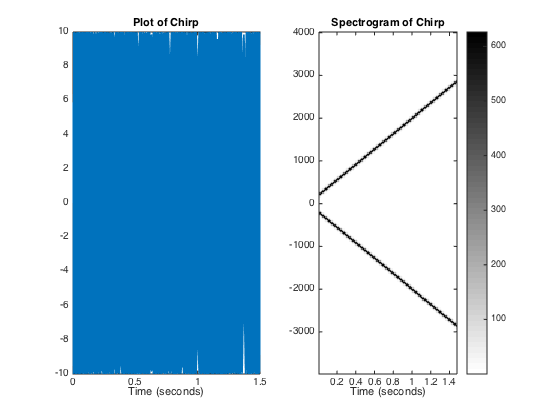

Contents
%%%% Lab 4 %%%%
3.1
dbstop if error [xn,tn] = coscos(2,3,20,1);
whos
3.2
amps = [1,1]; freqs = [1200,750]; phases = [0, 0]; fs = 8000; tStart = [0.6,0.2]; durs = [0.5,1.6]; maxTime = max(tStart + durs) + 0.1; durLengthEstimate = ceil(maxTime*fs); tt = (0:durLengthEstimate)*(1/fs); % Vector of Zeros to hold total signal xx = 0*tt; % Sum vectors for kk = 1:length(amps) nStart = round(tStart(kk)*fs) + 1; xNew = shortSinus(amps(kk), freqs(kk), phases(kk), fs, durs(kk)); Lnew = length(xNew); nStop = (nStart + Lnew - 1); xx(nStart:nStop) = xx(nStart:nStop) + xNew; end plotspec(xx, fs, 256);
3.3
specgram(xx,512,fs); % fs=8000; tt=0:1/fs:0.5; xx = cos(4000*pi*tt); % spectrogram(xx,1024,[],[],fs,'yaxis'); colorbar; % plotspec(yy+j*1e-9,fs,1024); colorbar; zz = DTMFdial('7',8000); subplot(3,2,1); plotspec(zz+j*1e-12,fs,1024); title('Plotspec 1024 Window Length'); subplot(3,2,3); plotspec(zz+j*1e-12,fs,256); title('Plotspec 256 Window Length'); subplot(3,2,5); plotspec(zz+j*1e-12,fs,64); title('Plotspec 64 Window Length'); subplot(3,2,2); spectrogram(zz,1024,[],[],fs,'yaxis'); colorbar title('Spectrogram 1024 Window Length'); subplot(3,2,4); spectrogram(zz,256,[],[],fs,'yaxis'); colorbar title('Spectrogram 256 Window Length'); subplot(3,2,6); spectrogram(zz,64,[],[],fs,'yaxis'); colorbar title('Spectrogram 64 Window Length');
3.4
myLFMsig.f1 = 200; myLFMsig.t1 = 0; myLFMsig.t2 = 1.5; myLFMsig.slope = 1800; myLFMsig.complexAmp = 10*exp(j*0.3*pi); dt = 1/8000; % 8000 samples per sec is the sample rate outLFMsig = makeLFMvals(myLFMsig,dt); %- Plot the values in outLFMsig figure; subplot(1,2,1); plot(outLFMsig.times, outLFMsig.values); title('Plot of Chirp'); xlabel('Time (seconds)'); %- Make a spectrogram for outLFMsig to see the linear frequency change subplot(1,2,2); % spectrogram(outLFMsig.values, 256, [], [], 8000, 'yaxis'); colorbar plotspec(outLFMsig.values+j*1e-12, fs, 256); colorbar; title('Spectrogram of Chirp'); xlabel('Time (seconds)'); [row, col] = size(outLFMsig.values); soundsc(outLFMsig.values); fprintf('Size of outlFMsig.values is: %f', col);
Size of outlFMsig.values is: 12001.000000